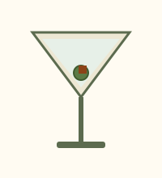
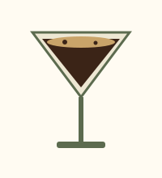
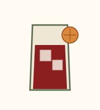
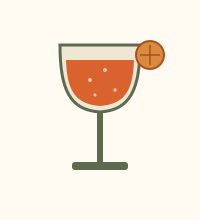
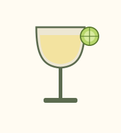
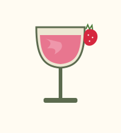

Martini Clásico
Gin, vermut seco y una aceituna. El trago que define la barra: seco, frío y directo.
Catálogo de tragos clásicos, elegidos con oficio de barra.

Gin, vermut seco y una aceituna. El trago que define la barra: seco, frío y directo.

Vodka, licor de café y un shot de espresso recién extraído. Espuma dorada y golpe de cafeína.

Gin, vermut rojo y Campari, en partes iguales. Amargo, franco, sin vueltas.

Vermut rojo, Campari y espumante en lugar de gin. Más liviano, con burbuja y con historia.

Ron blanco, lima y azúcar. Tres ingredientes, ningún atajo: el equilibrio hecho trago.

Ron blanco, fresas frescas, lima y azúcar, procesados con hielo. Versión frozen del clásico.